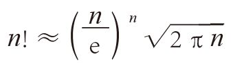
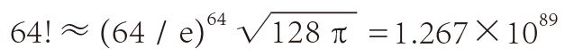
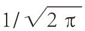
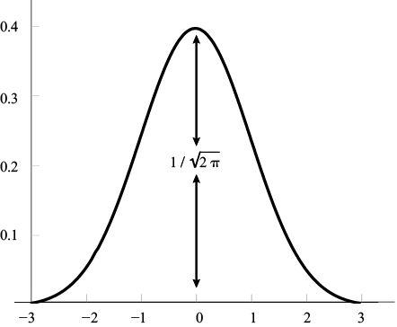

我们前文中介绍的这些面积、周长和体积公式之中都有π的身影，对此我们不会感到奇怪。但是，在很多我们意想不到的数学领域，竟然也可以看到这个神奇的数字。例如，我们在本书第4章讨论的 n!。n!的主要作用是统计某些离散量，与圆没有任何特殊关系。我们知道这个数字的增长速度非常快，而且还没有一个有效捷径可以快速算出它的具体数值。例如，我们仍然需要进行数千个乘法运算才能算出100 000!的数值。但是，我们可以利用“斯特林公式”（Stirling’s approximation），估计 n! 的近似值：

其中，e = 2.718 28…（也是一个非常重要的无理数，我们将在本书第10章对它进行详细讨论）。例如，用电脑计算64!，可以得出：64! = 1.269×1089。根据斯特林公式，

。（计算某个数的64次幂，是否有简便方法呢？有的！因为64 = 26，因此我们只需要对64 / e进行6次平方运算就可以了。）著名的“钟形曲线”（bell curve），如下图所示，在统计学以及所有的实验科学中都可见到。它的高是

，关于它的其他特性，我们将在本书第10章再做具体讨论。
一些无穷级数求和问题中也常常可以看到π。莱昂哈德·欧拉第一个找到了正整数倒数的平方求和公式：
1 + 1/22 + 1/32 + 1/42 + … = 1 + 1/4 + 1/9 + 1/16 + … = π2/6
如果上式各项再进行一次平方运算，就可以得到正整数倒数的4次幂的求和公式：
1 + 1/16 + 1/81 + 1/256 + 1/625 + … = π4/90
事实上，人们已经找到了正整数倒数的偶数次幂（2k）的求和公式，即π2k与某个有理数的乘积。
正整数倒数的奇数次幂的求和公式呢？我们将在本书第12章证明正整数倒数的和是无穷大的，但是它们高于1次的奇数次幂之和，例如3次幂：
1 + 1/8 + 1/27 + 1/64 + 1/125 + … = ?
这个结果并非无穷大。不过，至今还没有人找到一个简便的求和公式。
奇怪的是，π还出现在一些与概率有关的问题中。例如，如果你随机选择两个非常大的数字，它们没有公共的质因数的概率比60%大一点儿。具体来说，这个概率是6/π2 =0 .607 9…，正好是某个无穷级数和的倒数。